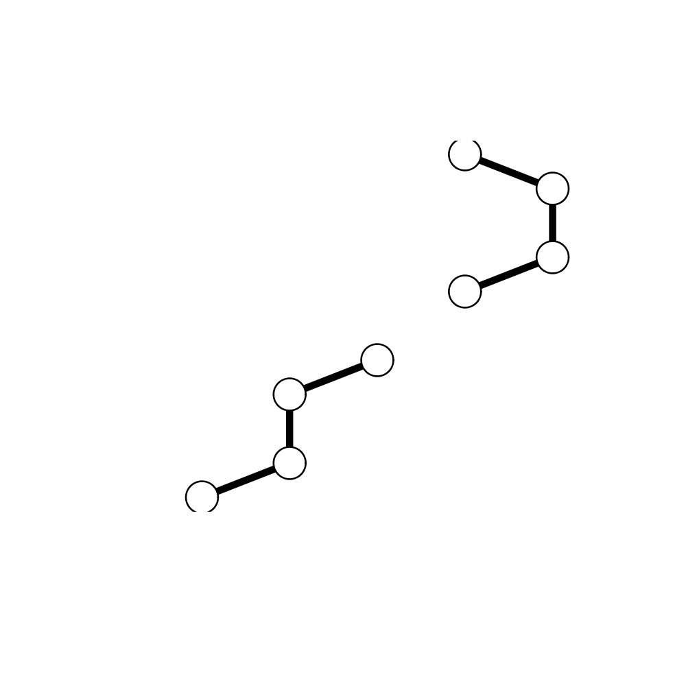
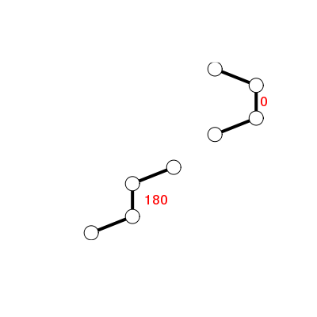

Calculate Torsion/Dihedral Angles
Usage
torsion.xyz(xyz, atm.inc = 4)
Arguments
- xyz
- a numeric vector of Cartisean coordinates.
- atm.inc
- a numeric value indicating the number of atoms to increment by between successive torsion evaluations (see below).
Description
Defined from the Cartesian coordinates of four successive atoms (A-B-C-D) the torsion or dihedral angle is calculated about an axis defined by the middle pair of atoms (B-C).
Details
The conformation of a polypeptide or nucleotide chain can be usefully described in terms of angles of internal rotation around its constituent bonds.
If a system of four atoms A-B-C-D is projected onto a plane normal to bond B-C, the angle between the projection of A-B and the projection of C-D is described as the torsion angle of A and D about bond B-C.
By convention angles are measured in the range -180 to +180, rather than from 0 to 360, with positive values defined to be in the clockwise direction.
With atm.inc=1, torsion angles are calculated for each set of
four successive atoms contained in xyz (i.e. moving along one
atom, or three elements of xyz, between sucessive
evaluations). With atm.inc=4, torsion angles are calculated
for each set of four successive non-overlapping atoms contained in
xyz (i.e. moving along four atoms, or twelve elements of
xyz, between sucessive evaluations).
Value
A numeric vector of torsion angles.
References
Grant, B.J. et al. (2006) Bioinformatics 22, 2695--2696.
Note
Contributions from Barry Grant.
Examples
## Calculate torsions for cis & trans conformers xyz <- rbind(c(0,-0.5,0,1,0,0,1,1,0,0,1.5,0), c(0,-0.5,0,1,0,0,1,1,0,2,1.5,0)-3) cis.tor <- torsion.xyz( xyz[1,] ) trans.tor <- torsion.xyz( xyz[2,] ) apply(xyz, 1, torsion.xyz)[1] 0 180plot(range(xyz), range(xyz), xlab="", ylab="", typ="n", axes=FALSE)apply(xyz, 1, function(x){ lines(matrix(x, ncol=3, byrow=TRUE), lwd=4) points(matrix(x, ncol=3, byrow=TRUE), cex=2.5, bg="white", col="black", pch=21) } )
NULLtext( t(apply(xyz, 1, function(x){ apply(matrix(x, ncol=3, byrow=TRUE)[c(2,3),], 2, mean) })), labels=c(0,180), adj=-0.5, col="red")
##-- PDB torsion analysis pdb <- read.pdb("1bg2")Note: Accessing online PDB file HEADER MOTOR PROTEIN 04-JUN-98 1BG2tor <- torsion.pdb(pdb) ## basic Ramachandran plot plot(tor$phi, tor$psi)## torsion analysis of a single coordinate vector inds <- atom.select(pdb,"calpha")Build selection from input string Using selection 'string' keyword shortcut: calpha = //////CA/ segid chain resno resid eleno elety Stest "" "" "" "" "" "CA" Natom "2527" "2527" "2527" "2527" "2527" "323" * Selected a total of: 323 intersecting atoms *tor.ca <- torsion.xyz(pdb$xyz[inds$xyz], atm.inc=3) ##-- Compare two PDBs to highlight interesting residues aln <- read.fasta(system.file("examples/kif1a.fa",package="bio3d")) m <- read.fasta.pdb(aln)pdb/seq: 1 name: http://www.rcsb.org/pdb/files/1bg2.pdb pdb/seq: 2 name: http://www.rcsb.org/pdb/files/1i6i.pdb PDB has ALT records, taking A only, rm.alt=TRUE pdb/seq: 3 name: http://www.rcsb.org/pdb/files/1i5s.pdb PDB has ALT records, taking A only, rm.alt=TRUE pdb/seq: 4 name: http://www.rcsb.org/pdb/files/2ncd.pdba <- torsion.xyz(m$xyz[1,],1) b <- torsion.xyz(m$xyz[2,],1) ## Note the periodicity of torsion angles d <- wrap.tor(a-b) plot(m$resno[1,],d, typ="h")